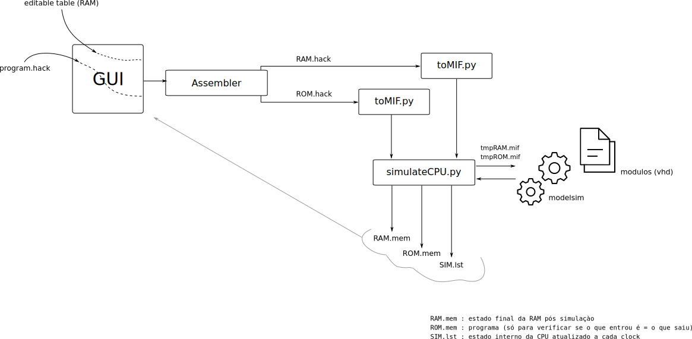
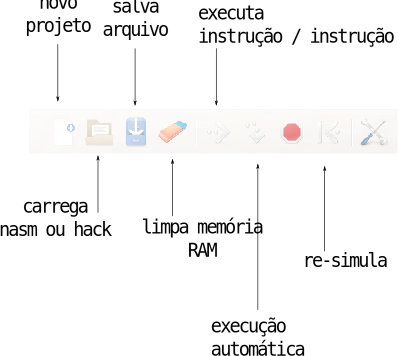
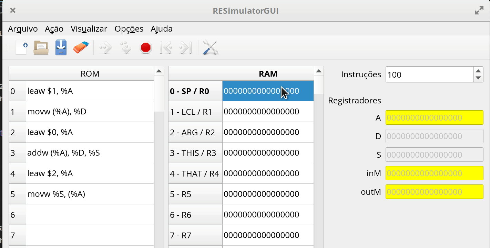

Lab 10: Assembly¶
Ao final desse lab você deve ser capaz de:
- Usar o simulador gráfico
- Fazer pequenas modificações em um código assembly
- Executar script de teste do projeto E - Assembly
Antes de começar
Toda vez que um novo projeto começar será necessário realizar algumas configurações no repositório do grupo, vocês devem seguir para o documento: Util/Começando novo Projeto e depois voltar para esse lab.
- Não seguir sem realizar a etapa anterior.
Tip
- Atualizem o Z01-Tools! submodule antes de começar.
Simulador¶
Nosso código assembly pode ser executado em hardware de verdade (FPGA) porém nesse primeiro momento iremos trabalhar em um ambiente simulado que nos dará maior facilidade de programação e depuração.
Um pouco de contexto: O livro texto (The Elements Of Computer System) disponibiliza um simulador da CPU original todo escrito em java, esse código é fechado e não permite nenhuma customização. Em 2017 o Prof. Luciano Pereira iniciou a criação de um simulador Z0 (versão anterior) também em Java, onde teríamos controle total do software.
Percebemos alguns pontos negativos de utilizar um simulador em Java sendo o principal: Qualquer alteração no Hardware iria demandar uma alteração no simulador, sendo necessário mantermos dois projetos independentes e sincronizados.
Nesta versão do curso iremos utilizar um simulador que utiliza o nosso próprio código VHDL como descrição da CPU (e de tudo envolvido), uma alteração no hardware (VHDL) irá automaticamente alterar o simulador e o comportamento do computador. Para isso, fazemos uso do ModelSim, um software da Mentor Graphics que executa simulações em VHDL (o mesmo utilizado nos projetos anteriores), desenvolvemos uma série de APIs e configurações desse simulador para funcionar para a disciplina.
As APIS de interface do simulador foram desenvolvidas pelo Prof. Rafael Corsi (vhdl/ tcl/ python) e a interface gráfica pelo Prof. Eduardo Marossi (python/ qt5).
De uma olhada na pasta Z01-Tools na sua home, está tudo lá!
O simulador possui a estrutura ilustrada a seguir:

O simulador possui como entradas (para cada simulação): a arquitetura do computador (hardware); o conteúdo da memória RAM o conteúdo da memória ROM e um tempo de execução.
Após o término da simulação é exportado diversos sinais internos da CPU, o estado final da memória RAM e ROM. Esses sinais são então lidos pela interface gráfica e exibida de uma forma amigável, ou usados nos testes.
Arquivos¶
O simulador está localizado nas pastas Z01-tools/ :
Z01-Simulator-GUI: Parte gráfica do simuladorZ01-Simulator-RTL: Hardware a ser executado no modelsim para executar o programa.
Para inicializar o simulador basta executar o script localizado na pasta do projeto E:
$ python3 E-Assembly/Z01simulador.py
Interface do Simulador¶
O simulador possui a interface a seguir, onde a coluna da esquerda é referente a memória ROM (programa), a coluna da direita referente a memória RAM (dados).

Toda vez que houver uma alteração em algum dos parâmetros do simulador (RAM/ROM/Instruções,...) o programa será novamente executado no simulador para obtermos um resultado atualizado. Isso pode dar a sensação de "lerdeza" mas lembre da complexidade do sistema: estamos executando um programa em um hardware inteiramente simulado no computador de vocês.

Programando¶
Abra o simulador e insira o seguinte código nasm (na parte referente a ROM), uma instrução por linha:
leaw $1,%A ; carrega a constant 1 em %A
movw (%A),%D ; move o valor da RAM[%A] para %D
leaw $0,%A ; carrega a constant 0 em %A
addw (%A), %D, %D ; faz RAM[%A] + %D e salva em %D
leaw $2, %A ; carrega a constant 2 em %A
movw %D, (%A) ; copia o valor de %D para RAM[%A]
Esse código soma o valor que está salvo na memória RAM endereço 0 com o valor da memória RAM endereço 1 e salva no endereço RAM[2]:
RAM[2] = RAM[0] + RAM[1]
mov
A operação de movw não 'move' o dado de um lugar para outro, ela copia. O valor no destino não é apagado, por exemplo:
leaw $10, %A
movw %A, %D
Ao final dessas operações os registradores %A e %D possui o valor 10.
labels
R0, R1, .., R15, ... são nomes pré definidos de endereços de memória. O R0 indica o endereço de memória 0, R1 o endereço de memória 1 e assim por diante até o R15. O mesmo código pode ser escrito como:
leaw $R1,%A
movw (%A),%D
leaw $R0,%A
addw (%A), %D, %D
leaw $R2, %A
movw %D, (%A)
Para testarmos esse código será necessário colocarmos valores iniciais na memória RAM para validarmos o nosso código, para isso altere a memória RAM como demonstrado a seguir:
- Endereço 0 = 5
- Endereço 1 = 8

Executando
- Com a memória alterada você pode agora executar a simulação
- Verifique se o valor da memória 2 é a soma dos endereços 0 e 1.
- Brinque com esses valores...

Treinando¶
Vamos praticar um pouco agora programar em assembly, no começo parece bem difícil, mas com a prática as coisas vão ficando mais fáceis.
Use o resumo das instruções: AssemblyZ01 para saber as instruções disponíveis.
Altere o código para armazenar o resultado no endereço RAM[5]
Solução
leaw $1,%A
movw (%A),%D
leaw $0,%A
addw (%A), %D, %D
leaw $5, %A ; <- alterado essa linha para 5!
movw %D, (%A)
Altere o código para armazenar o negativo da operação entre RAM[0] + RAM[1] no endereço RAM[5] (dica: tem uma operação de NEG).
solução
leaw $1,%A
movw (%A),%D
leaw $0,%A
addw (%A), %D, %D
negw %D ; aqui eu faço %D = - %D
leaw $5, %A
movw %D, (%A)
Script automático de testes¶
Além da interface gráfica do simulador, possuímos um script de teste automatizado (similar ao do VHDL), esse script: E-Assembly/testeAssembly.py compila os códigos que estão na pasta E-Assembly/src/ para a pasta E-Assembly/bin/hack e executa os testes localizados em E-Assembly/tests/. Somente os arquivos configurados no config_testes_nasm.txt serão testados.
config_testes_nasm.txt¶
O arquivo de configuração dos testes é um pouco diferente, possui além do nome do módulo que será testado um segundo parâmetro que indica quantos testes serão executados para esse módulo e quantos microsegundos ele ficará na simulação (microsegundos suposto de um sistema real).
Exemplo do config_testes_nasm.txt
# nome | quantidade de testes | us de execucao
#add 1 1000
Implementando o add.nasm¶
Os arquivos a serem implementando estão na pasta E-Assembly/src/ lá você vai encontrar todos os códigos fontes que deverão ser feitos nesse projeto.
Tarefa
Edite o arquivo add.nasm realizando a implementação que ele pede no comentário do arquivo (já foi feito nesse lab)
vscode
Abra o arquivo add.nasm no VsCode.
Agora com o módulo implementando podemos testar seu funcionamento. Para isso execute o script testeAssembly.py. Esse script irá compilar o nasm e gerar os arquivos .hack e .mif (salvos no /bin/hack/) que serão carregados no simulador junto com uma configuração inicial da memória RAM (como no gui do simulador), ao término da simulação um arquivo com o estado final da RAM é salvo na pasta /tests/add/add0_end.mif.
Executamos um script que compara o estado final da RAM com o um esperado (add0_tst.mif), em caso de algum erro, o script irá reportar falha.
Se tudo ocorrer bem você deverá ter a seguinte saída :
- Testando ....
-------------------------
Starting add0 ....
pass add0
==== Summary ===================================
+ pass add teste: 0
Implementando outros módulos¶
Vamos implementar outros módulos: sub.nasm e mov.nasm. Para cada módulo descomente o teste no config_tests_nasm.txt e leia o que deve ser feito nos comentários de cada arquivo.
Tarefa
- Implementar o
sub.nasme testar - Implementar o
mov.nasme testar